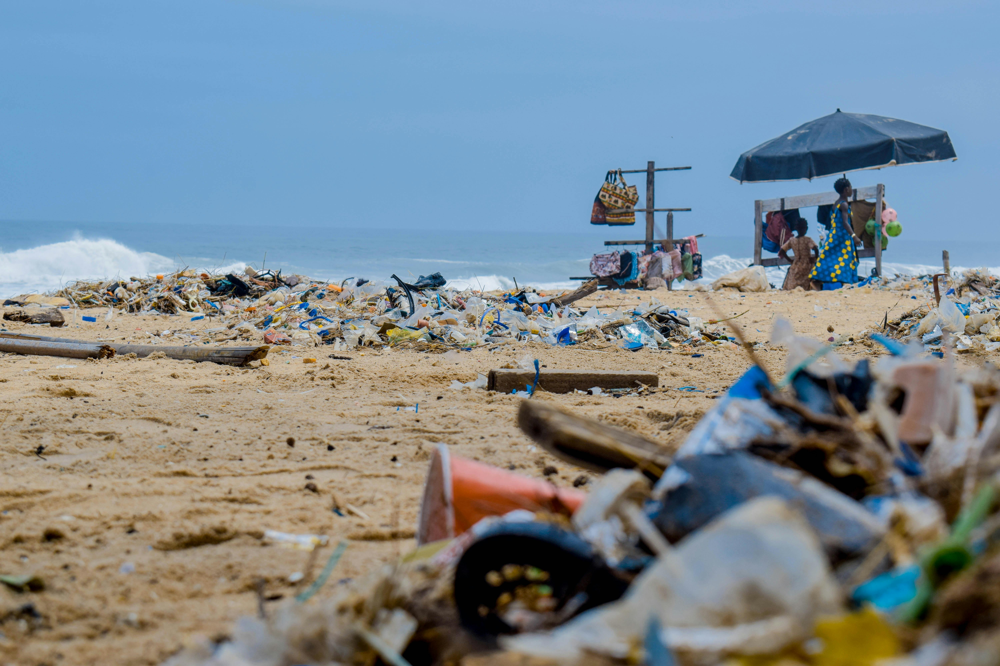

"Unseen and often overlooked, the detrimental effects of plastic pollution are silently echoing through the ocean depths,
posing a severe risk to the health of underwater ecosystems and the creatures that call them home."

"Explore the mystic world beneath the waves, where plastic pollution is casting a dark shadow on the delicate balance of marine life,
disrupting ecosystems and leaving a lasting impact on our oceans."
"In the hidden depths of our seas, a tragic tale unfolds as marine creatures grapple with the pervasive threat of plastic pollution,
an ever-growing menace to underwater habitats."